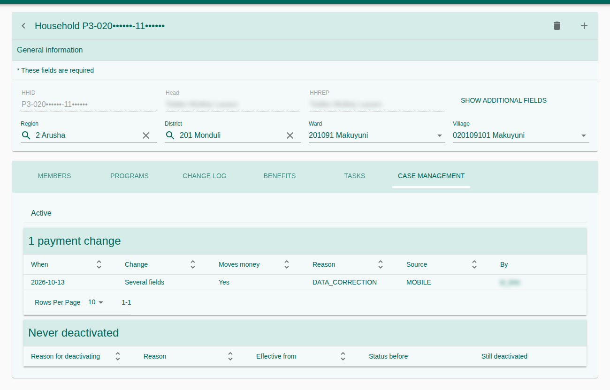
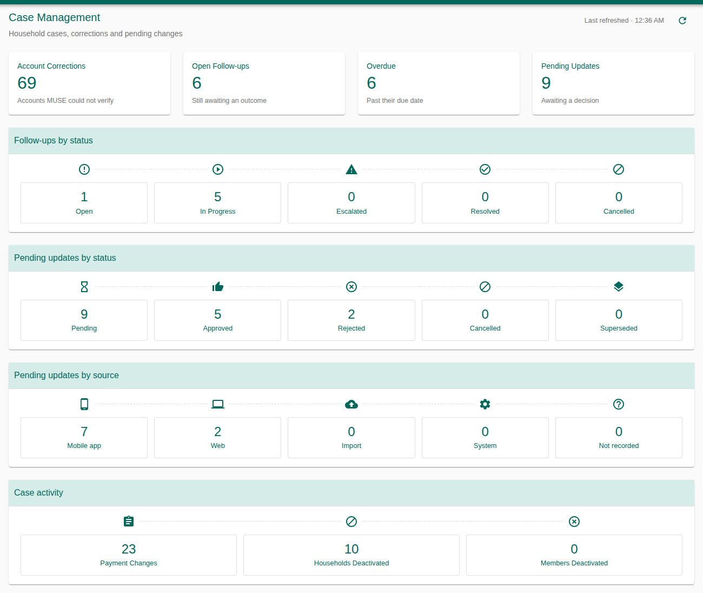
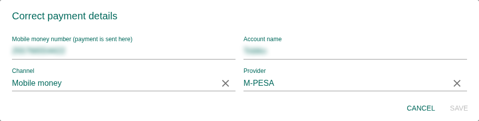
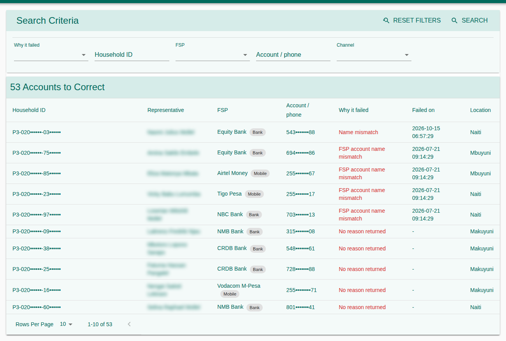
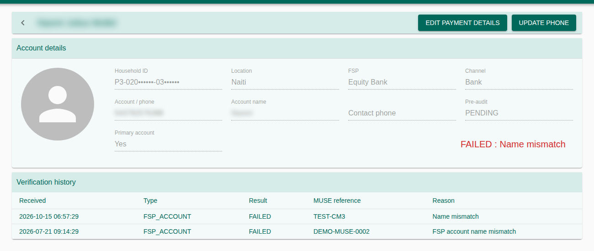
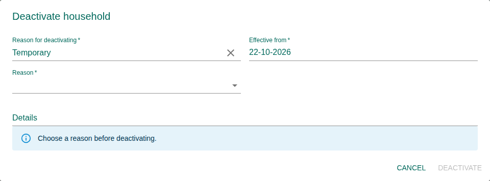
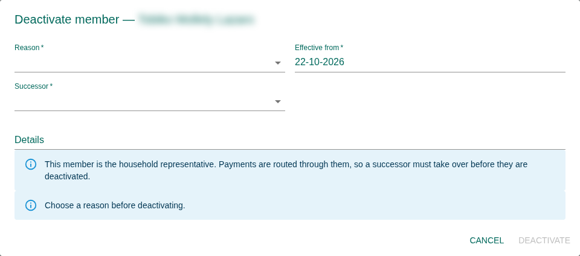
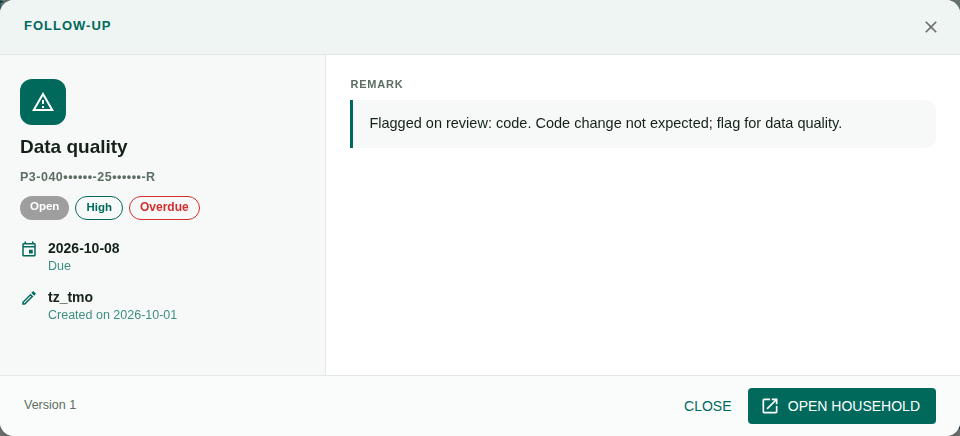
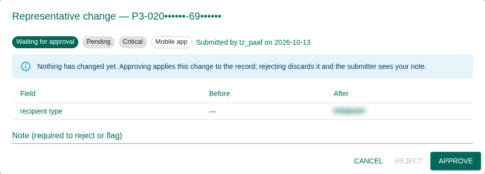

Daily procedures for household casework: correcting payment details, deactivating and reactivating households and members, tracking follow-ups and deciding pending updates. Case Management keeps why a household's record changed and who approved it. The household, its members and its payment account stay in the Registry and Payment modules; every change is made through the same rules from the web and the mobile app.
1. Purpose, Roles, and Access
A household changes over time: its mobile-money number goes wrong, a member dies, the family moves, a payment fails verification. Case Management lets staff record those changes with a reason, sends the ones that move money or end a membership to a second person, and keeps the full history.
Typical user roles
| Role | Typical work |
|---|---|
| Field / district officer (PAA Facilitator, TMO, Council Coordinator) | Propose payment corrections and deactivations; add follow-ups. Sees the households of their own districts. |
| Grievance officer | Work the Account Corrections list. |
| Approver (e.g. Payment Approver, HQ) | Approve or reject pending updates. |
| Supervisor / M&E | Dashboard and history. |
Access & permissions
| Right | Grants |
|---|---|
290101 | The Case Management Dashboard. |
290201 | See the payment-change history of a household. |
290203 | Change payment details (account number, provider, account name). |
290204 | Update the contact phone only. |
290205 | The Account Corrections list. |
290301 / 290302 / 290303 | See / request / reverse deactivations. |
290401 / 290402 / 290403 | See / add / update follow-ups. |
290501 / 290502 | See Pending updates / approve or reject them. |
2. Where Case Management Appears
Case Management has no household list of its own. You work from the Registry screens you already know:
| Where | What you can do |
|---|---|
| Case Management menu | Dashboard, Follow-ups, Pending Updates, Account Corrections. |
| Household page → Case Management tab | Change payment details or phone; see payment-change and deactivation history; deactivate or reactivate the household. |
| Households, Members and the household's Members table | Row actions to deactivate or reactivate a household or a member. |
| Payments → Verification → Failed | Double-click opens the same correction page as Account Corrections. |


3. Dashboard
Four cards: Account Corrections (accounts that could not be verified), Open Follow-ups, Overdue (past their due date) and Pending Updates (awaiting a decision). Below them, follow-ups and pending updates by status, pending updates by source (web or mobile app), and case activity: payment changes, households deactivated, members deactivated. Click a card to open its list; Refresh reloads the figures.


4. Change Payment Details or Contact Phone
A household has two phone numbers, and only one of them pays:
| Field | Used for | Changing it |
|---|---|---|
| Mobile money number / bank account number | Where the money is sent | Needs a reason and approval; the account is verified again before the next payment. |
| Contact phone | Reaching the household only | Applies at once; never re-verifies the account. Recorded for review. |
Correct payment details
- Open the household, go to the Case Management tab and choose Change payment details (or Edit payment details on a correction page).
- Change the account number, channel (Bank / Mobile money), provider or account name.
- Choose a Reason (e.g. Account number wrong or invalid) and add details.
- Press Save. The change is submitted for approval; the account keeps its current details until it is approved.
- After approval the account goes back to Pending verification and pre-audit, and is checked with GePG again.


Update the contact phone
Choose Update contact phone. Enter a Tanzanian mobile number (0712345678 or 255712345678); the dialog shows how it will be saved. Numbers must be 255 followed by 9 digits starting with 6 or 7.
5. Account Corrections
Every account that failed verification, or was not sent because its number is invalid or belongs to another provider, is listed here until it is corrected. There is nothing to add or remove by hand: an account leaves the list once its approved correction sends it back for verification.
| Why it failed | Meaning |
|---|---|
| Failed verification | GePG, or a reviewer, rejected the name or account. |
| Not sent to GePG | Withdrawn before sending. |
| Invalid mobile number | Not 255 + 9 digits starting with 6 or 7. |
| Number and provider don't match | e.g. an Airtel number recorded as M-Pesa. |
| No account | Shows the households that have no payment account at all; double-click opens the household. |
Filter by Household ID, representative, FSP, channel or account / phone. A row marked Waiting for approval already has a correction submitted.


- Double-click a row to open the Account Correction page: account details, verification history (each attempt with its result and reason) and any change waiting for approval.
- Use Edit payment details or Update phone.
- While a correction waits, the page shows Now and After approval side by side, and a link to Pending updates.


6. Deactivate and Reactivate
Deactivation records a programme decision: the household or member stops being paid, but stays visible with its reason and history, and can be reactivated. It is not deletion, and it is not graduation.
Deactivate a household
- From the household's row action or its Case Management tab, choose Deactivate household.
- Choose the type, Temporary or Permanent, a reason and the Effective from date; add details.
- Press Deactivate and confirm. The request waits for approval; nothing changes until it is approved.
- A Permanent deactivation is refused while members are still active, or while a payment to the household is in progress. The dialog lists the members to deactivate first.
- Deceased applies to a household only when it has a single member.


Deactivate a member
- Choose Deactivate member on the member's row.
- Choose the reason (Shifted or Deceased) and the effective date; for Deceased, the date of death.
- If the member is the household's representative (payment recipient), choose the Successor who takes over.
- Confirm. The request waits for approval.


Reactivate
Choose Reactivate household or Reactivate member. The menu shows why it was deactivated. The household returns to its previous status and can be paid again. Each deactivation and reactivation stays in the Deactivation history.
7. Follow-ups
A follow-up is a tracked piece of casework on a household, such as a payment failure to chase or a beneficiary to contact. Each has a category, priority, status, an assignee and a due date (7 days by default).
- Open Case Management → Follow-ups; filter by household, status, category or priority, or tick Overdue only.
- Open a follow-up to read it, then Update its status: Open → In progress → Resolved (or Escalated / Cancelled).
- When resolving, write a Resolution note. Open household goes to the household page.


8. Pending Updates (Approvals)
Every change that needs a decision is listed here, rated by severity: Critical (it moves money), Warning (e.g. a new representative) or Info (e.g. a contact phone). Changes sent from the mobile app are all listed here and change nothing until they are approved.
| Kind | Buttons | Effect |
|---|---|---|
| Waiting for approval | Approve / Reject | Approve applies the change; Reject discards it. |
| Already applied | Acknowledge / Flag | Flag opens a data-quality follow-up. |
- Filter by kind, status, severity or source, and press Review on a row.
- Compare Before and After for each field.
- Write a decision note (required to reject or flag) and decide.


A district officer sees and decides only the households of their own districts. If an approved change could not be saved to the record, the row reads Approved but NOT applied and a data-quality follow-up is opened.
9. Reasons and Statuses
Reasons
| Used for | Reasons |
|---|---|
| Payment changes | Account closed · Account number wrong or invalid · Beneficiary changed provider · Requested by the beneficiary · Name does not match the account · Data correction · Other |
| Household deactivation | Shifted · Graduated · Committee member · Not attended 2 consecutive CS · Deceased (single-member households) |
| Member deactivation | Shifted · Deceased |
Statuses
| Record | Statuses |
|---|---|
| Follow-up | Open · In progress · Resolved · Escalated · Cancelled |
| Pending update | Pending · Approved · Rejected · Cancelled · Superseded (a newer change replaced it) |
10. Troubleshooting and Good Practice
| Message or problem | What to do |
|---|---|
| “You submitted this change, so someone else must decide it.” | By design; another approver must decide it. |
| “This change was already decided in the Tasks inbox.” | Refresh the list. |
| Save is disabled: Payment in progress | Wait until the paylist holding the payment finishes. |
| Permanent deactivation refused | Deactivate the listed members first. |
| Someone else changed the record first | Reopen the record and make the change again; edits are never merged silently. |
| A corrected account is still on Account Corrections | The correction is waiting for approval; see Pending updates. |